Redesign concept · Není úklid jako úklid
A cleaning company that doesn’t look like one
A self-initiated redesign for a small cleaning company in Brno. The service is careful and personal. The website looked like a template and hid its best arguments in the FAQ.
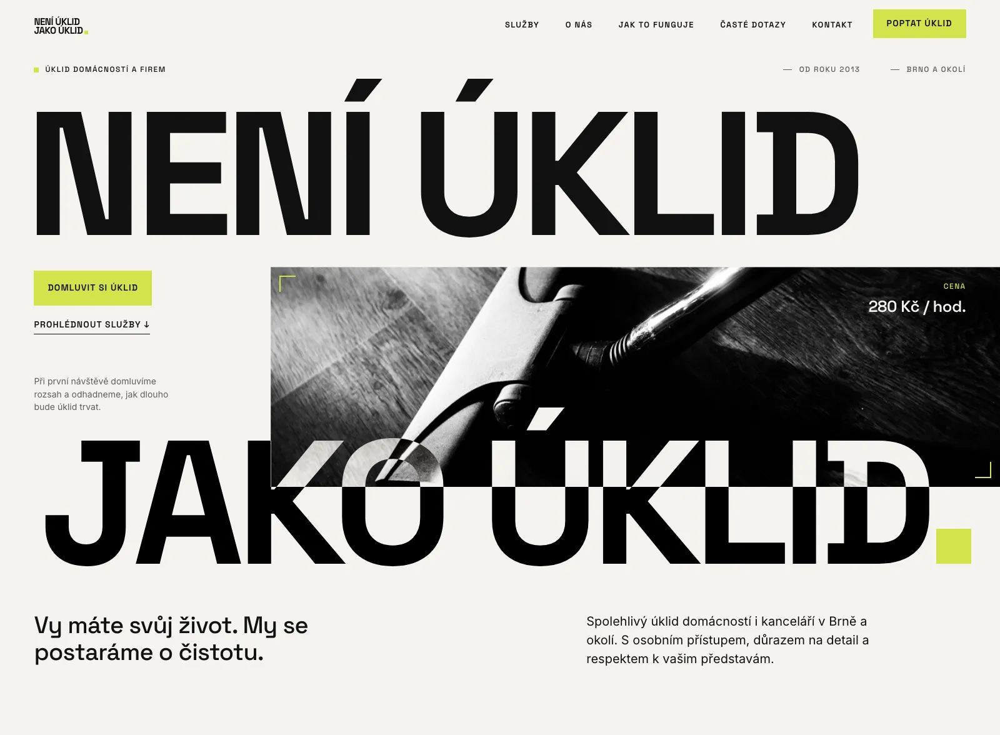
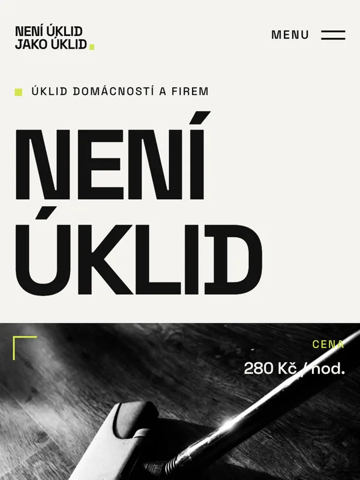
An unsolicited concept. I’m not affiliated with the company, and the current website is unchanged.
Context
A strong name. A template website.
Není úklid jako úklid roughly means “not all cleaning is the same”. The company has cleaned homes in Brno since 2013. The owner visits every new client in person, tries to send the same cleaner every time, and answers price questions with real numbers.
The homepage showed none of that: a WordPress theme with a rotating slider, a stock photo of rubber gloves and an image placeholder that was never replaced.
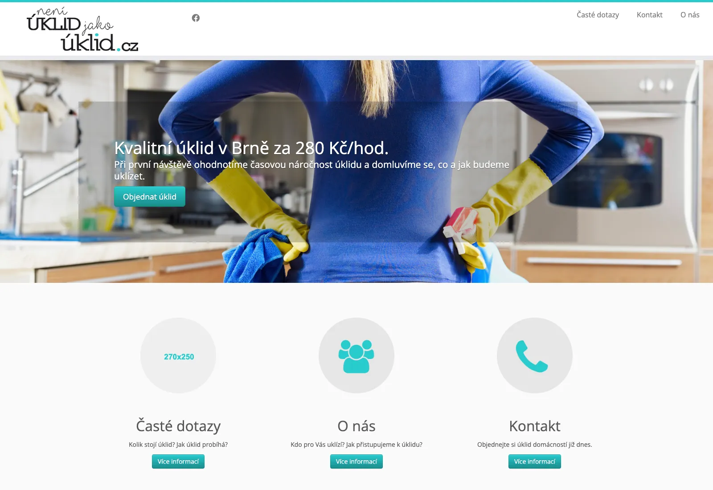
Audit
Everything was there, just in the wrong place
Before designing anything, I read the whole site. The reasons to trust the company were already written down. Visitors just had to dig for them.
| What I found | What the redesign does |
|---|---|
| The price, 280 CZK an hour, shows on one of five slider slides. How it’s estimated and what a typical job takes are only in the FAQ. | The price stays on the homepage, next to real examples: a 70 m² flat takes 3–4 hours. |
| Same cleaner every time, the owner’s first visit, insurance: buried in long answers. | They become the three-step process and a full FAQ on the homepage. |
| Five rotating slider messages compete for attention. | One message, said once, very large. |
| Three pages and no list of services. | A typographic list of seven services, each one leading to an inquiry. |
| A generic theme and stock imagery. | An identity built around the name itself. |
Insight
In cleaning, the product is trust
I didn’t interview customers for this concept. The existing FAQ is the next best thing: a record of what people really ask before they let someone into their home.
| What customers worry about | What the website answers |
|---|---|
| “A stranger in my home.” | The owner comes to the first visit in person. The same cleaner comes every time. Keys are on your terms. |
| “What will it cost?” | An hourly price on the homepage and time estimates from real jobs. |
| “What if something gets damaged?” | Insurance, plus a check of the home on the first visit. |
| “What if we don’t get on?” | They offer someone else, no questions asked. |
The name already says what makes the company different. The design only had to dare to say it out loud.
Art direction
Editorial confidence, service-level trust
Cleaning websites tend to look alike: blue, round icons, stock photos of smiling cleaners. I went the other way, towards fashion editorials and Swiss graphic design: huge type, asymmetry, black and white photos, and one acid-lime accent.
It had to look premium without looking like a luxury service. That’s why the price sits on the homepage and the copy stays plain: short sentences, no “your satisfaction is our priority”.
#F4F3EF55 %#11111130 %#A8A8A3#DEDED9#D3E34C5 %Lime is the only accent, used sparingly: buttons, one highlighted word, small details. Its strength is the contrast with black and warm white.
NENÍ ÚKLID
Space Grotesk, bold capitals with tight tracking. The headlines carry the layout, up to 270 px on desktop.
Spolehlivý úklid domácností i kanceláří v Brně a okolí.
Inter for reading: calm and legible next to the loud headlines.
The full stop
A lime square
The brand’s period. It ends the wordmark, the hero line and the footer.
Precision
Viewfinder corners
Thin lime brackets on key photos, as if someone zoomed in to check the detail.
What I left out
No icons, no blue
No gradients, no shadows on cards, no smiling stock cleaners. Typography does the work.
Before and after
Same company, a different first impression
The same content, the same price, the same screen size. Drag the line to compare the current website with the concept.
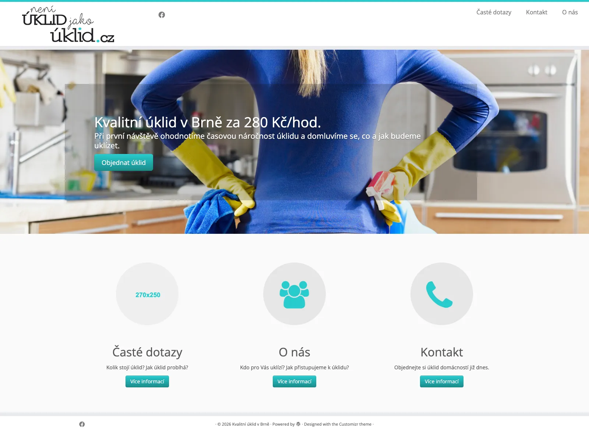
BeforeAfter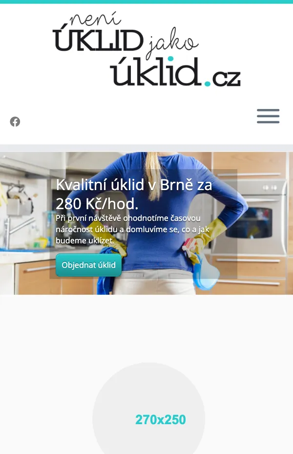
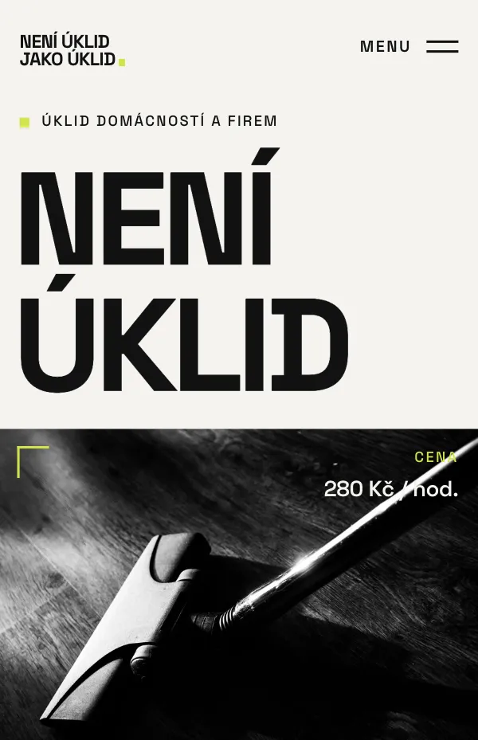
BeforeAfter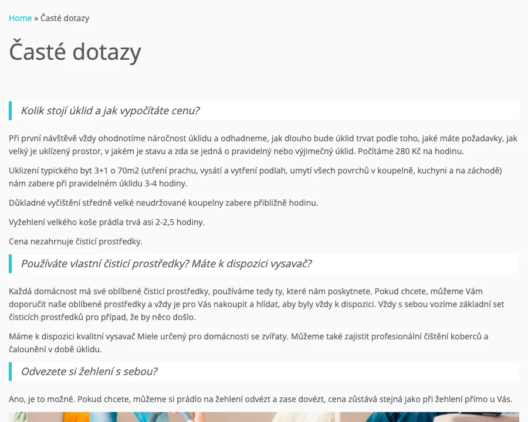
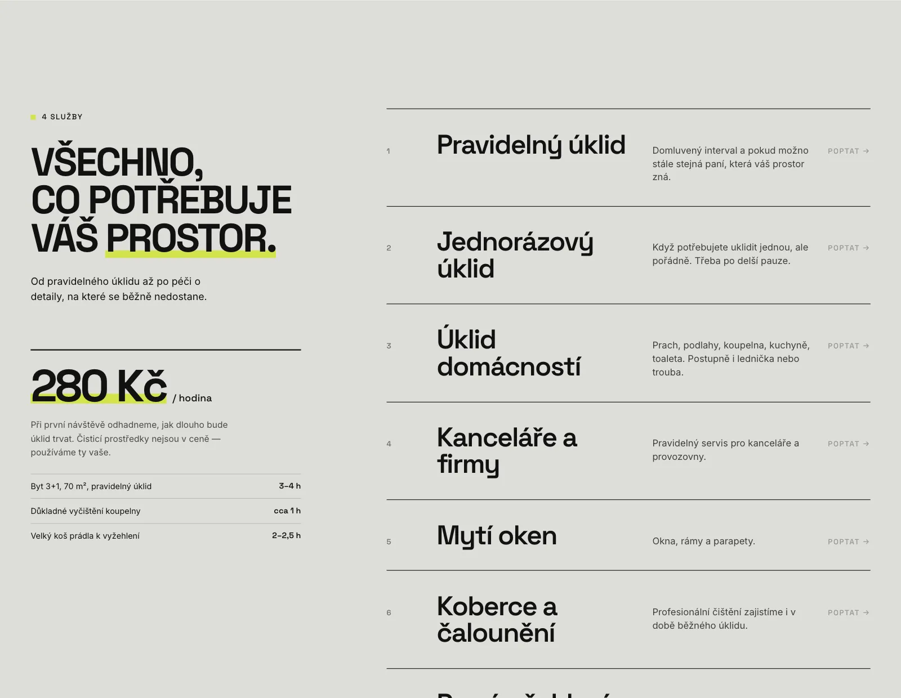
Structure
One page that argues, section by section
Every section has one job, and the page alternates light and dark, big photos and pure type, so the long scroll keeps a rhythm.
| Section | Its job |
|---|---|
| Hero | The name is the headline. A photo splits it in two, and the second line runs over the photo. |
| Manifesto | The attitude: “It’s not just about clean. It’s about how we get there.” |
| Two worlds | Homes and businesses in two deliberately different, asymmetric blocks. |
| Services and price | Seven services as a typographic list, and the hourly price with time examples. |
| The detail | The difference between cleaning and good cleaning, in one close-up. |
| Process | Three steps, from the first call to a clean home. |
| About, reviews, FAQ | A real person, other people’s words and honest answers. |
| Contact | A lime finale with a short inquiry form, a phone number and an e-mail. |
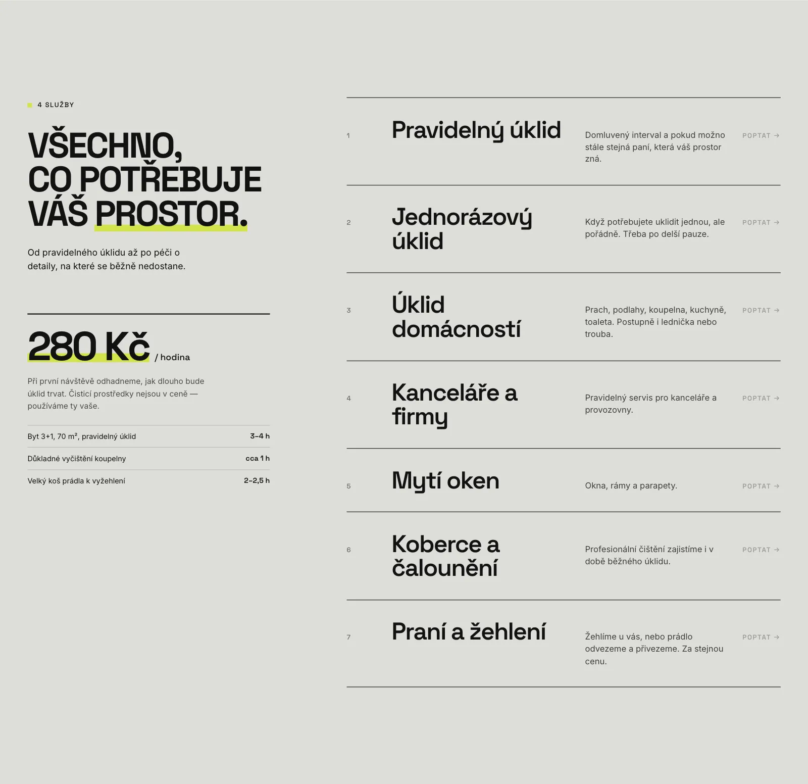
Signature section
The difference is in the details
The old site’s best line was “A polished tap? Of course.” I gave it its own dark section: a black and white close-up of a basin, huge type running over the photo, and the details that prove it, like their own vacuum cleaner for homes with pets.
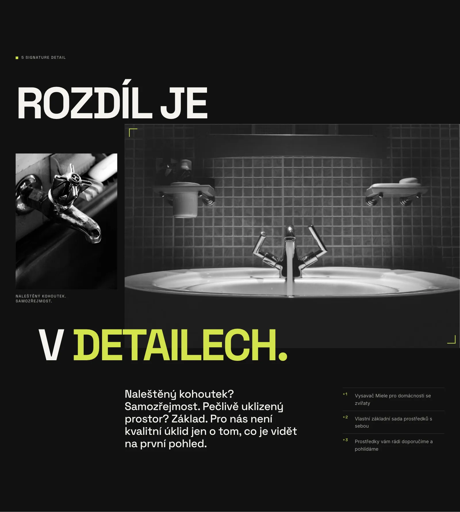
Process and FAQ
Answer the worry before it’s asked
Three steps, set like a staircase so they read as progress. Under each step there is a practical detail: who comes to the first visit and which hours they work. The FAQ keeps all nine of the company’s own questions, opens one at a time and puts the phone number right beside it.
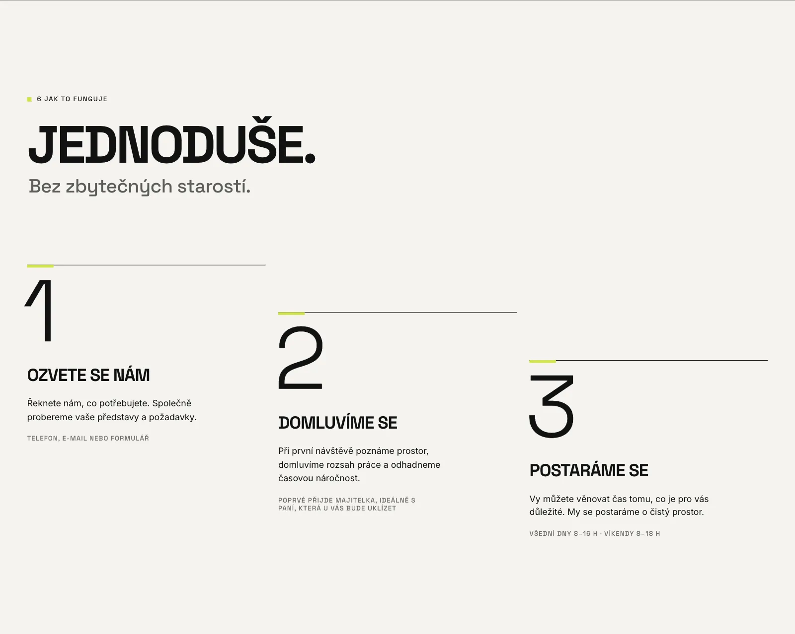
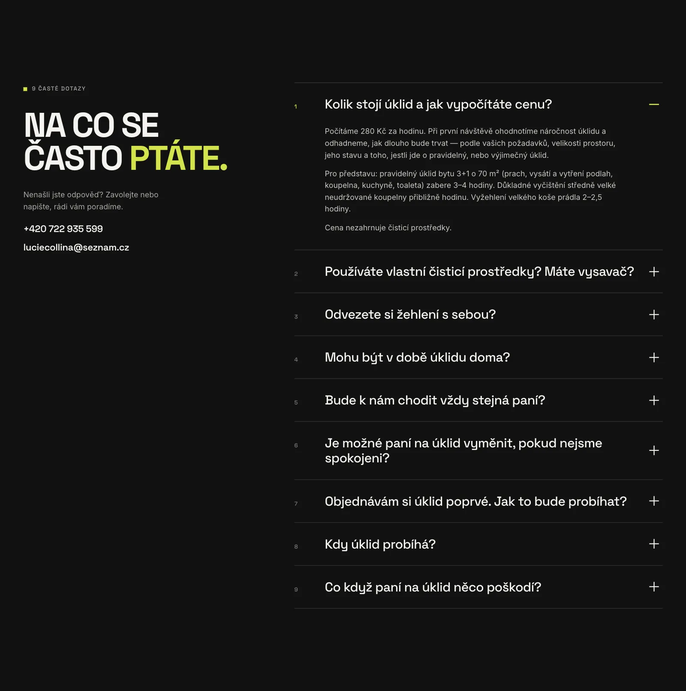
Mobile
Its own composition, not a smaller desktop
On a phone the name breaks into four stacked words with the photo between them. Once you scroll past the hero, a lime “book a cleaning” button stays on screen and steps aside at the contact form.
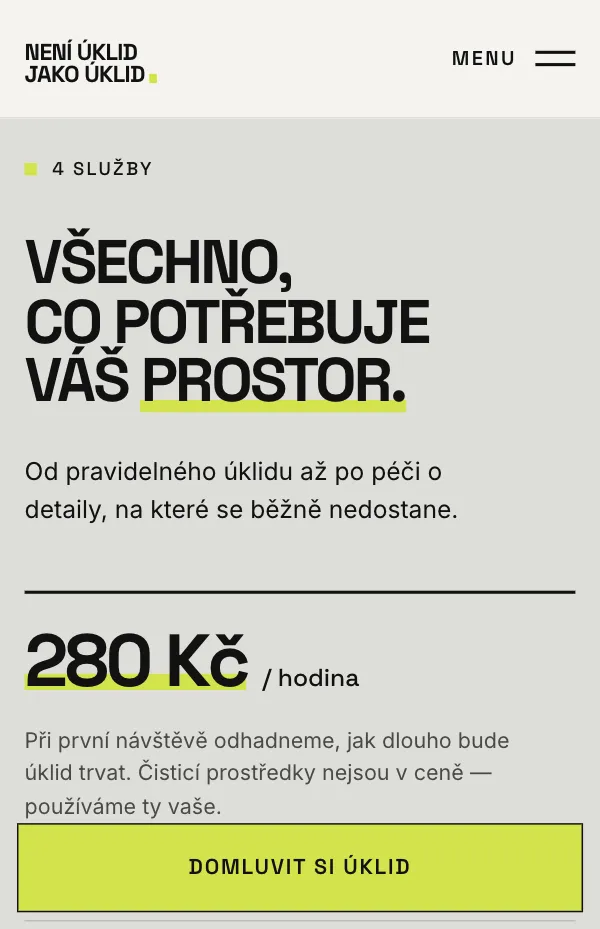
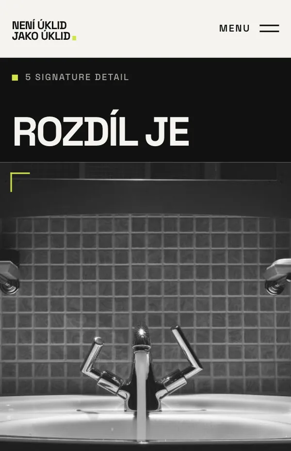
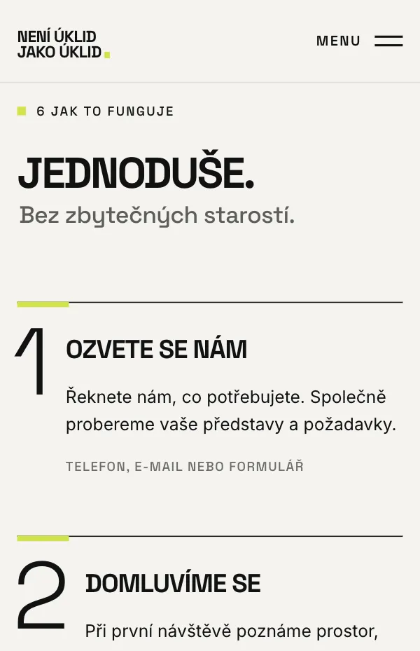
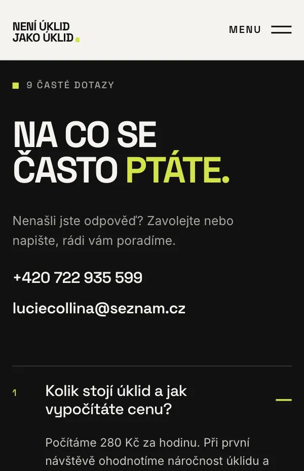
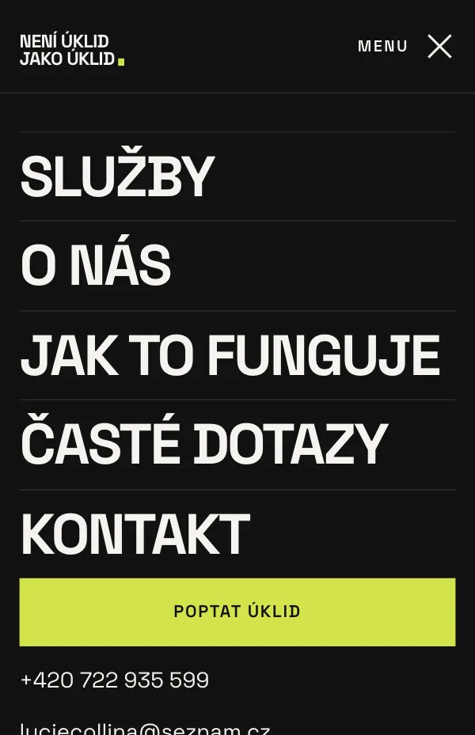
Iteration
Simpler with every review
I reviewed the prototype in short rounds on desktop and on a phone. Most changes took something away.
| Change | Why |
|---|---|
| The menu stays fixed and highlights the current section | On a long page you always know where you are and can jump anywhere. |
| Arrows removed from buttons | The label is the action. Arrows stay only on links that point somewhere: down the page or to another site. |
| A repeated fact removed from the hero | “Homes / Businesses” repeated the label next to it. One less thing to read in the first two seconds. |
| FAQ added, a duplicate trust strip removed | The four reassurances were already answered, in more detail, in the FAQ. |
| Czech accents fixed in the text animation | The line-by-line reveal clipped the marks above Č, Š and Ú in tight headlines. I gave the mask room above the letters. |
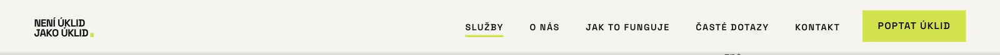
Content
Honest by default
Facts
Only what’s already published
Prices, contacts, hours and processes come from the current website. Services it doesn’t mention are flagged in the content file for the owner to confirm.
Reviews
No invented customers
The site had no reviews, so the section uses draft texts based on real service facts. They stay labelled as drafts until real customers approve or rewrite them.
Editing
Copy separate from layout
All text lives in one file, and photos can be swapped by file name, so the owner can update the site without touching the design.
Next
From concept to a website that books
This is a working prototype, not a launched site, so there are no results to report yet. These are the next steps:
Before launch
- Walk the owner through the concept and confirm the flagged services.
- A photo shoot of the real team at work, to replace the temporary public-domain photos.
- Ask regular customers to approve or rewrite the review drafts.
To validate
- A five-person usability test on a phone: “find the price” and “book a first visit”.
- Connect the inquiry form and measure inquiries against the current site.